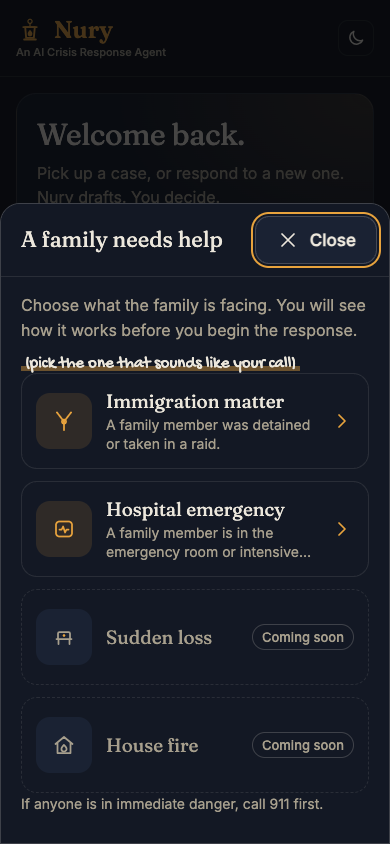

01 · The call
2:07 AM. A pastor's phone rings.
A family. A husband was detained last evening.
no lawyer on the line

01 · The call
A family. A husband was detained last evening.
no lawyer on the line
02 · The name
/NOO-ree/ proper noun
Etymology: Arabic nūr, "light, ray of light, lamp, lantern".
see also: lantern
Built in Boulder, Colorado, during the Gloo AI Hackathon, October 6 to 8, 2026. Every step is in the build log.
03 · The product
a gate after each stage
04 · The demo
nothing moves on without the pastor

05 · How it is built
20 named checks plus the safety floor. 5 Gloo calls for a full package. No send path. Gloo for the model, YouVersion for exact Scripture text; only tokens and a verse reference leave the app.
06 · Innovation
Add a playbook. The engine does not change. Detention and hospital both run on it.
Playbooks share small skills, like voice and grounding. A stage includes them by name.
Rejected, rewritten, up to three tries. Nothing moves on without the pastor's approval.
a test builds a new crisis
07 · Use of AI
| Leak test | 90 checks per playbook, 0 found |
|---|---|
| Judge test | unsafe 0.89 to 0.98, safe 0.02 to 0.24 |
| A full package | 34 to 50 s, 6 to 9 cents |
we decide what to change
08 · Impact
| Before | Final | |
|---|---|---|
| Detention (20) | 12 / 2 / 6 | 11 / 1 / 8 |
| Hospital (8) | 5 / 2 / 1 | 5 / 0 / 3 |
| Hostile intakes (18) | 6 / 11 / 1 | 13 / 1 / 4 |
| Cost per run | $0.07 and $0.09 | $0.06 and $0.09 |
| Time per run | 41 s and 50 s | 34 s and 50 s |
Judge pass / fail / awaiting a person. Not human verdicts. Synthetic families. Detention and hospital cost and time are means. Before: build c317050. Final: build 9bc5c6d.
The Jev decision API from TypeSafe is used as typed judges in our evaluation harness and as a run-time draft classifier; disclosed as third-party technology per the rules.
09 · Team
Juan Peláez, 3Metas, with agents that coordinate over a messaging protocol. Every step is in the commit log.
Real pastors. An immigration attorney to review our sources.
none of that is done yet
An AI Crisis Response Agent.
Legal information only. Not legal advice.
Built in Boulder, Colorado, during the Gloo AI Hackathon, October 6 to 8, 2026. Every step is in the build log.

In memory of Nury Peláez, 83.
She served her church in the small things and the big ones,
always with a smile, always with Jesus in her heart.
Nury is named for her.
May it be ready to help, the way she always was.
| Red team, through Gloo AI Studio | Jev, from TypeSafe: a typed judge | |
|---|---|---|
| What it is | Three models from three makers: OpenAI GPT-5.4, Google Gemini 3.1 Pro, Meta Llama 4 Maverick. None is Claude, on purpose. They hunt freely and must quote the sentence. Before release only. | Answers a fixed question, yes or no or 1 to 5, with a probability. At run time it checks every draft; at test time it judges whole runs. |
| Good at | Finding what nobody asked about | Repeatable: within 0.03 an hour later |
| Weak at | Flags safe text too: advisory | Blind to what we did not ask |
| Numbers | Validation: all three caught 8 of 8 injected problems | Unsafe 0.89 to 0.98, safe 0.02 to 0.24 |
| Rule | Two quote the same problem: a person sees it | Accept at 80%, fail at 20%, middle to a person |
| Final run | Audit on an earlier build, not re-run: 45 sentences two reviewers agreed on; 20 look like real problems. | 46 scenarios: 29 pass, 2 fail, 15 undecided. Judge results. |
The red team runs before release only; the product never calls it. Jev runs in both places, so the test-time Jev judges are not independent of the run-time gate; the plain-code judges, the red team and a person are. Our reasoning, not a measurement: a free hunter is noisy, a fixed question is blind to what we did not ask, and a person settles the rest. We have not tested a single model as judge.
Jev is from TypeSafe, used at run time and at test time, and disclosed as third-party technology.
| What broke | What changed |
|---|---|
| The disclaimer never said Nury is an AI assistant. | Both disclaimers now say it. |
| Edited rights text did not reach stages 3 to 5. | Those stages now read the approved rights text. |
| A checklist named a detainee locator outside our vetted sources, three times. The stage escalated. | The checklist uses only vetted points and names no agency. |
| The judge read rejected drafts the pastor never saw. | Judges now see only what the pastor saw. |
| A vague intake ("Something happened to my mom") got comfort instead of a structured case. | Fix sent to the triage prompt: a bare plea is intake to structure, never to answer. |
| A made-up bare domain passed the link check. | The link check now covers bare domains. |
| The checklist still adds some lines no vetted point supports ("memorize the phone number"). | Not advice or a prediction. Accepted and disclosed. |
| How it works | Claude writes. Named rules check. Then one call to Jev asks yes or no questions about the draft. At its line (0.50, or 0.60 for the facts question) it is rejected and rewritten, up to three tries, then the pastor takes over. |
|---|---|
| What Jev sees | Tokens, not names. A leak test sent 15 canaries and found none. |
| If Jev is down | The pastor is not blocked. The draft goes on under the plain-code checks, and the log says so. |
| Speed | About 150 ms a call, about 1 second added to a package. Jev costs about $0.0004 a package ($0.042 per million input tokens). |
| The lines | 0.50, and 0.60 for the facts question, a line we set after seeing the data. On 20 real draft pairs: safe 0.02 to 0.35, unsafe 0.78 to 0.99. Not a calibration study. Not perfectly repeatable: the same drafts moved by up to 0.12. |
| What went wrong live | In a grief case at 0.50, Jev rejected a safe triage three times (0.85 to 0.88) and the stage escalated. With the crisis type given and the 0.60 line it completed, but triage scored 0.59, one hundredth under the line. False-reject rate over many cases: not measured. |
Live on three scenarios. Pastor edits are not checked. TypeSafe's terms and retention for this use have not been reviewed.
| Short answer | Not yet. We built the loop and tested it on synthetic scenarios. No real pastor has used Nury, so nothing has been learned. We do not claim it improves Nury. |
|---|---|
| The loop | Capture what a pastor changes, with names already tokens. Analyze it. Test a proposed change before and after. A named person approves. |
| What it never does | Change a prompt, a rule or a model by itself. It proposes and scores. A person approves. |
| Switches | Capture is off by default. The consent sentence shows only when it is on. |
| Not done | No real pastor has used it. Capture is built and tested offline. The before-and-after test has not run live. |
| Layer | What it does | What it cannot do |
|---|---|---|
| Deterministic checks | Banned phrases, disclaimers, link and phone allowlist, language, workflow. No AI, no cost. | Cannot judge meaning. |
| Typed judges (Jev) | Yes/no and score questions on the whole run, at test time. | Not independent of the run-time gate. Middle scores go to a person. |
| Red-team panel | Models from other makers read the output. In validation all three caught 8 of 8 injected problems. | It also flagged safe text, and one reviewer quoted text that is not there, so it is advisory. |
| A person | Juan decides every item the other layers could not settle. | Slow. That is the point. |

We read the NASW standards for social work case management (2013) in full. We did not map CMSA's standards (members only) or SAMHSA's sixth principle: we could not verify them.
| Entry | What it does | Nury |
|---|---|---|
| Rockpool | Finds repeated church work and automates it. | Shows up for the crisis, when margin runs out. |
| KineticFlow | Supports the pastor's own workload and rest. | Equips the pastor to care for others in acute crisis. |
| Both | Routine and planning. | High-stakes, non-routine, 2 AM. Approval gates after every stage. Vetted sources only. |
No real people or children appear. No agency imagery. Details: branding/IMAGES.md.